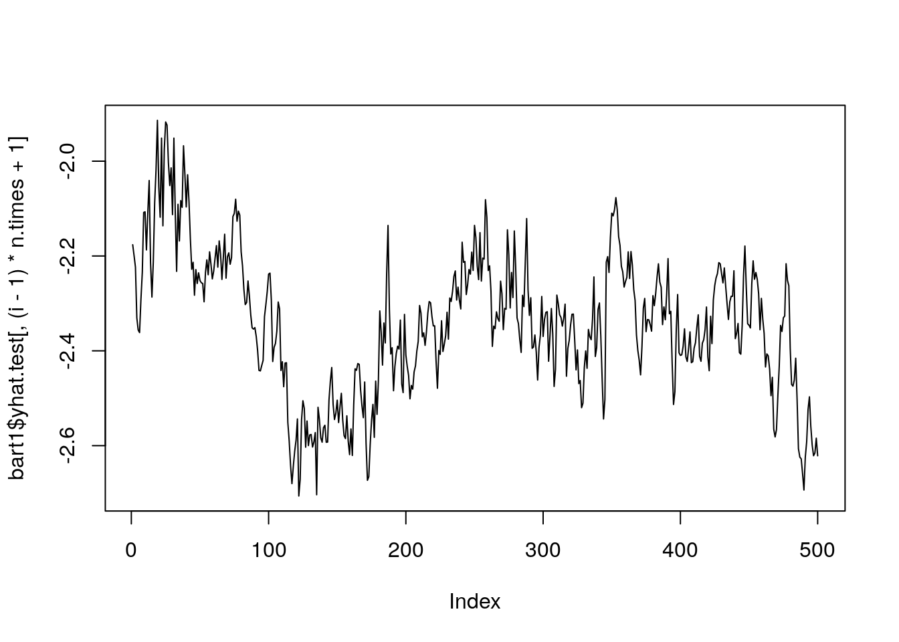
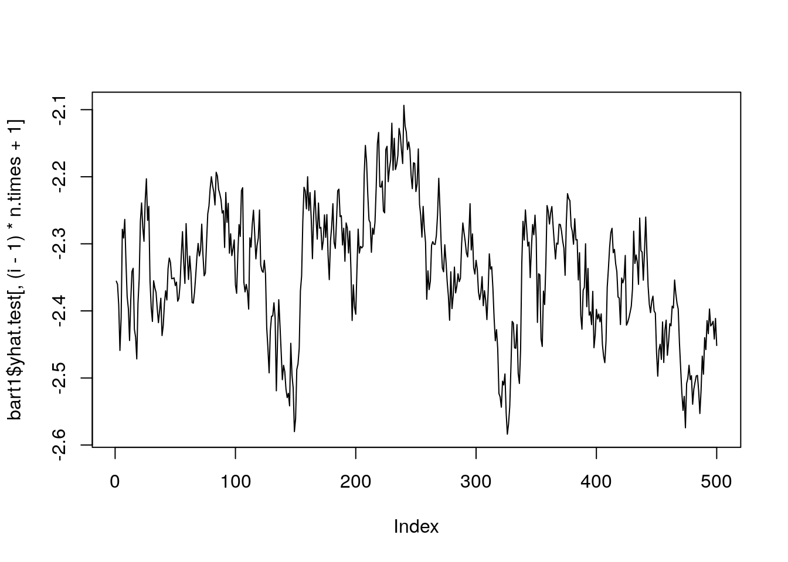
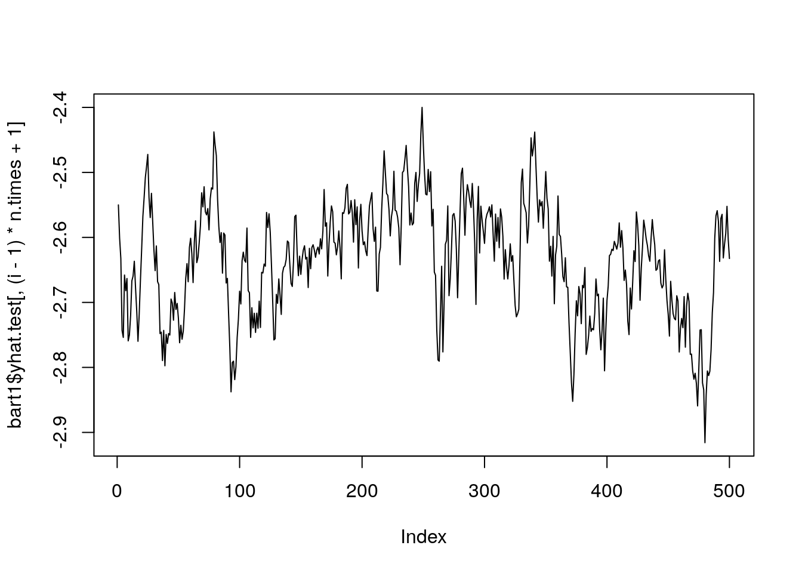
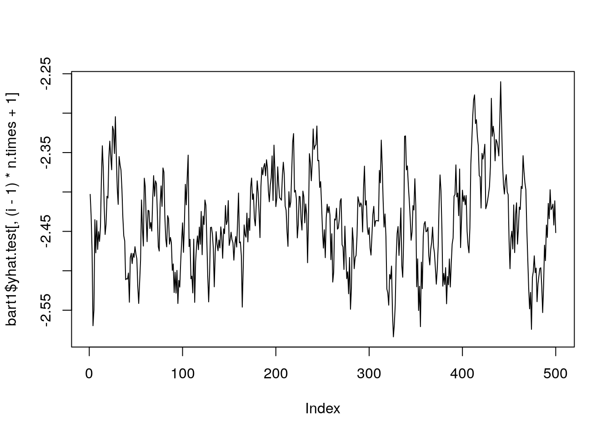
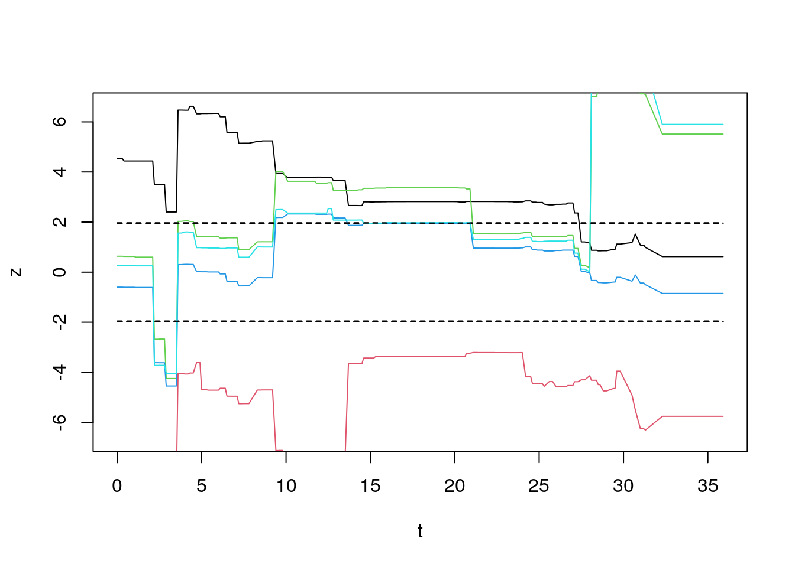
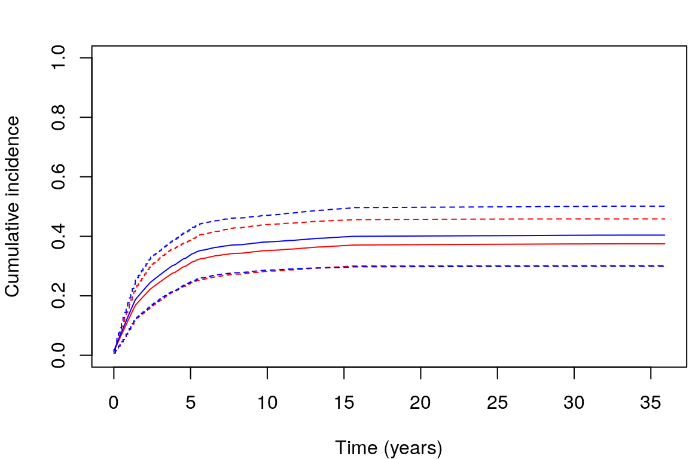

The dataset used here corresponds to the Hodgkin’s disease (HD) study described in Pintilie, 2006. The data was loaded and pre-processed using the script that is sourced below. The latter creates three data objects:
hd: all the samples in the original datahd_train: a random sample of the data to be used as a
training sethd_test: a random sample of the data to be used as a
testing setDetails about data pre-processing steps can be found here
source("../Data_prep/data_prep.R")
#> The sourced script has been used to load and pre-process the data.
#> The latter converts appropriate variables into factors.
#> Additionally, we randomly split the data into training and testing sets,
#> enabling us to evaluate out-of-sample predictive performance when comparing different approaches.The following sections illustrate the usage of methods that use discrete time specification when modelling competing risks data.
BART has a well documented vignette (Sparapani, Spanbauer, and McCulloch (2021)). Here, we focus only on demonstrating its usage for a CR setting, which corresponds to Section 5.3 in Sparapani, Spanbauer, and McCulloch (2021). In the following, we fit the model with the two different likelihood formulations to compare the obtained estimates.
The first step is to recast the data creating dummy variables for all categorical covariates. This is done for both train and test sets:
library(nnet)
library(survival)
library(BART)
#> Loading required package: nlme
#>
#> Attaching package: 'nlme'
#> The following object is masked from 'package:dplyr':
#>
#> collapse
library(stats)
xtrain = model.matrix(~. , hd_train[,c(1:6)])[,-1]
xtest = model.matrix(~. , hd_test[,c(1:6)])[,-1]The first method employs two binary likelihoods. The first one is a
BART survival model for the time to the first event and the second model
accounts for the probability of the event being of type \(k=1\) given that the it occurred. The user
can fit the model by using function crisk2.bart(). Note
that the required binary event indicators \(y_{ijk}\) can be constructed beforehand
with surv.pre.bart() and passed to the function using the
y.train argument. Instead, here we pass arguments
times and delta which will construct event
indicators internally. If we are interested in predictions, the test set
can be passed directly when fitting the model through the argument
x.test. Arguments to control the MCMC sampler are:
ndpost, nskip, and keepevery.
Their functionality is documented in the help file for the
crisk2.bart() function.
set.seed(99)
bart1 <- crisk2.bart(x.train = xtrain,
times = hd_train$time, # needed if ytrain is not provided
delta = hd_train$status, # needed if ytrain is not provided
x.test = xtest,
sparse = FALSE, # set equal TRUE for variable selection
type = 'pbart',
ntree = 30, numcut = 100,
ndpost = 500, nskip = 500, keepevery = 5)Note that the code shown above does not use multi-threading, but BART
permits its usage by using mc.crisk2.bart() function
instead of crisk2.bart().
Studying convergence diagnosis of the MCMC chains is key to ensure
the predictions are valid. For continuous outcomes, this can be done
using the standard deviation parameter (\(\sigma\)) that is estimated by BART via the
wbart() function. Convergence assessment is more
challenging when using BART for survival outcomes. If there is a single
event type and the model was fitted using surv.bart(), then
convergence can be monitored using its yhat.train output.
However, as yhat.train is high-dimensional (there is one
column for each person-period pair), examples in the BART library
suggest to randomly select a subset of individuals and visualise
convergence diagnostics associated to their associated estimates. Here,
we will randomly select 5 individuals.
Generally, convergence would be assessed on estimates generated for
the training data. However, if there are multiple event types and
crisk2.bart() was used to fit the model,
yhat.train is not present in the output provided by the
current implementation (the same occurs for crisk.bart()).
Here we explore two possible strategies.
First, we use the posterior predictive distribution for the test
dataset which was calculated based on MCMC draws generated for the
training dataset. The following code visualises MCMC draws obtained for
yhat.test oftained for the first three individuals in the
test set (first time-period only)
n.times <- length(bart1$times)
# Select 5 random individuals
set.seed(10)
aux <- sample(seq_len(nrow(hd_test)), size = 5)
for(i in aux) {
plot(bart1$yhat.test[ , (i-1)*n.times + 1], type = "l")
}
We can use Geweke diagnostics to assess converge across all time-points for our randomly selected individuals.
# code adapted from the example in `demo("geweke.lung.surv.bart", package = "BART")`
mycol <- 0
for(i in aux) {
mycol <- mycol + 1
# selects samples for individual i across all time-points
post.mcmc <- bart1$yhat.test[ , (i-1)*n.times + seq_len(n.times)]
# calculates the geweke diagnostic
z <- gewekediag(post.mcmc)$z
# to set the limits in the plot below
y <- max(c(4, abs(z)))
## plot the z scores vs. time for each patient
if(i==aux[1]) plot(bart1$times, z, ylim=c(-y, y), type='l',
xlab='t', ylab='z')
else lines(bart1$times, z, type='l', col = mycol)
lines(bart1$times, rep(1.96, n.times), type='l', lty=2)
lines(bart1$times, rep(-1.96, n.times), type='l', lty=2)
}
Alternatively, when contacting the authors to ask their advice about
this, they suggested an alternative strategy. This requires fitting a
new model, using the training data as a test set
(i.e. x.test = xtrain). The code required to this is
provided below.
set.seed(99)
bart1.chains <- crisk2.bart(x.train = xtrain,
times = hd_train$time, # needed if ytrain is not provided
delta = hd_train$status, # needed if ytrain is not provided
x.test = xtrain,
sparse = FALSE, # set equal TRUE for variable selection
type = 'pbart',
ntree = 30, numcut = 100,
ndpost = 500, nskip = 500, keepevery = 5)Similar plots for the Geweke diagnostic criteria can be then
generated using the code above, replacing bart1 by
bart1.chains.
This, however, can be very time consuming — particularly for large
datasets or when the number of unique event times is large. Moreover,
this would assess MCMC convergence in a different chain to what is
contained in bart1. Another option would be to use the
predict() function, using the training dataset as test
data. This allows us to obtain estimates
(e.g. surv.test.mean) for individuals in the training
set.
# prepare the data to the format required by BART
# The training data is used as test dataset
set.seed(99)
pre <- surv.pre.bart(x.train = xtrain, x.test = xtrain,
times = hd_train$time, delta = hd_train$status)
# generate predictions using
pred.train <- predict(bart1, newdata = pre$tx.test, newdata2 = pre$tx.test)As before, the Geweke diagnostic criteria can be applied:
# code adapted from the example in `demo("geweke.lung.surv.bart", package = "BART")`
mycol <- 0
for(i in aux) {
mycol <- mycol + 1
# selects samples for individual i across all time-points
post.mcmc <- pred.train$yhat.test[ , (i-1)*n.times + seq_len(n.times)]
# calculates the geweke diagnostic
z <- gewekediag(post.mcmc)$z
# to set the limits in the plot below
y <- max(c(4, abs(z)))
## plot the z scores vs. time for each patient
if(i==aux[1]) plot(pred.train$times, z, ylim=c(-y, y), type='l',
xlab='t', ylab='z')
else lines(pred.train$times, z, type='l', col = mycol)
lines(pred.train$times, rep(1.96, n.times), type='l', lty=2)
lines(pred.train$times, rep(-1.96, n.times), type='l', lty=2)
}In both cases, we notice that the Geweke statistics exceed the \(95\%\) limits several times, suggesting the
chains have not converged. Thus, the MCMC should be run for a longer
number of iterations to obtain valid estimates. In practice, this means
that nskip should be increased. However, to avoid long
running times when compiling this vignette, this is left as an exercise
to the reader.
The remaining of this vignette will continue as if the sampler had converged.
CIFs for the subjects in the test set can be obtained through
cif.test.mean(). This provides the posterior mean across
MCMC samples. In addition, credible intervals can be computed from the
samples saved in cif.test. First, we re-organised the
predicted CIF for cause 1 for the test dataset. The constructed matrix
contains one row per subject and the columns correspond to the unique
time points at which it is evaluated. Second, we compute 95% credible
intervals.
cif.pred <- matrix(bart1$cif.test.mean, nrow=nrow(xtest), byrow = TRUE )
# Compute 95% credible intervals and put in matrix format:
cif.025 <- apply(bart1$cif.test, 2, quantile, probs = 0.025)
cif.025 <- matrix(cif.025, nrow=nrow(xtest), byrow = TRUE)
cif.975 <- apply(bart1$cif.test, 2, quantile, probs = 0.975)
cif.975 <- matrix(cif.975, nrow=nrow(xtest), byrow = TRUE)We show CIF curves for the first (red) and second (blue) individuals in the test set along with its corresponding credible intervals:
par(mar = c(4, 4, 2, 0.1))
plot(bart1$times,
cif.pred[1,],
type = "l",
col = "red",
ylim = c(0, 0.6),
xlab = "Time (years)",
ylab = "Cumulative incidence")
points(bart1$times,cif.025[1,], col = "red", type ='s', lwd = 1, lty = 2)
points(bart1$times,cif.975[1,], col = "red", type = 's', lwd = 1, lty = 2)
lines(bart1$times, cif.pred[2,], col="blue")
points(bart1$times,cif.025[2,], col = "blue", type ='s', lwd = 1, lty = 2)
points(bart1$times,cif.975[2,], col = "blue", type = 's', lwd = 1, lty = 2)
legend("bottomright", legend = c("Patient 1", "Patient 2"),
lty = c(1,1), col = c("red", "blue"))Similar to other approaches, BART permits to do predictions of the
CIF at a specific time point (e.g. \(t=5\) years) for a new dataset
(e.g. hd_test). Note that predictions are only provided for
time-points present in the training dataset. Below, we show results for
the first 5 subjects in the test set.
BART1.pred <- matrix(bart1$cif.test.mean, nrow=nrow(xtest), byrow = TRUE )
BART1.pred[1:5, which(bart1$times == 5)]
#> [1] 0.3200795 0.3458437 0.2952182 0.2691998 0.2547399Note also that if a new test dataset is available, one can do
predictions afterwards by making a call to the
predict.crisk2bart() function. For instance:
set.seed(99)
pre <- surv.pre.bart(x.train=xtrain, x.test=xtest,
times=hd_train$time,
delta =hd_train$status)
bart1.pred <- predict(bart1, newdata=pre$tx.test, newdata2=pre$tx.test)
# Same results are obtained if the same test dataset is used
cif.pred[1:4, 1:4]
#> [,1] [,2] [,3] [,4]
#> [1,] 0.012018387 0.02388410 0.03559916 0.04716553
#> [2,] 0.013490303 0.02678276 0.03988044 0.05278634
#> [3,] 0.010450391 0.02078480 0.03100457 0.04111104
#> [4,] 0.009426601 0.01875810 0.02799552 0.03713985
matrix(bart1.pred$cif.test.mean, nrow=nrow(xtest), byrow = TRUE )[1:4, 1:4]
#> [,1] [,2] [,3] [,4]
#> [1,] 0.012018387 0.02388410 0.03559916 0.04716553
#> [2,] 0.013490303 0.02678276 0.03988044 0.05278634
#> [3,] 0.010450391 0.02078480 0.03100457 0.04111104
#> [4,] 0.009426601 0.01875810 0.02799552 0.03713985It is possible to employ a sparse Dirichlet prior for variable
selection (DART model). This will help us to determine variable
importance. In order to fit such model we use again
crisk2.bart() function and set the sparse
argument equal to TRUE.
set.seed(99)
dart1 <- crisk2.bart(x.train = xtrain,
times = hd_train$time, # needed if ytrain is not provided
delta = hd_train$status, # needed if ytrain is not provided
x.test = xtest,
sparse = TRUE, # set equal TRUE for variable selection
type = 'pbart',
ntree = 30, numcut = 100,
ndpost = 500, nskip = 500, keepevery = 5) The output of the function is the same as discussed in the previous section. For simplicity, we have not evaluated convergence here, but the approach described above could be applied. CIF estimates can also be obtained as shown before.
Here, we illustrate the new functionality provided by DART in terms of variable selection. The plot below shows the estimated marginal posterior probabilities of inclusion associated to each input covariates:
dart1$varprob.mean[-1]
#> age sexM trtgivenRT medwidsiN medwidsiS extranodY clinstg2
#> 0.17246905 0.07388055 0.06406175 0.03695244 0.06917858 0.05304716 0.22277258
plot(dart1$varprob.mean[-1],
ylab='Selection Probability',
ylim=c(0, 1))
P <- ncol(xtrain) # use to set thereshold probability for each covariate
abline(h = 1/P, lty = 2)
dart1$varprob.mean[-1] > 1/P
#> age sexM trtgivenRT medwidsiN medwidsiS extranodY clinstg2
#> TRUE FALSE FALSE FALSE FALSE FALSE TRUEAccording to the plot above only age and treatment are relevant (this assumes a \(1/P\) threshold). However, note that these results should be interpreted with caution as convergence diagnostics have not been applied.
As before, predictions of the CIF at \(t=5\) years for the test dataset
(hd_test) can also be obtained.
DART1.pred <- matrix(dart1$cif.test.mean, nrow=nrow(xtest), byrow = TRUE )
DART1.pred[1:5, which(dart1$times == 5)]
#> [1] 0.2701254 0.3576845 0.2583587 0.2803809 0.2396327This approach is discussed in Section 3.2 of Sparapani et al. (2020) and fits also two separate BART
probit models. The first model, corresponds to the conditional
probability of a cause \(k=1\) event at
a given time. The second, models the conditional probability of an event
of type \(k=2\) at a specific time,
given that the individual is still at risk and did not experience a type
\(k=1\) event. In this case, the model
is fit with function crisk.bart():
set.seed(99)
bart2 <- crisk.bart(x.train = xtrain, times = hd_train$time,
delta=hd_train$status,
x.test = xtest,
sparse=FALSE,
type='pbart',
ntree = 30, numcut = 100,
ndpost = 500, nskip = 500, keepevery = 5)
# Parallel computation of the model is available using mc.crisk.bartThe output is the same as in model formulation 1 and an analysis of convergence can be performed as before. For simplicity, this is excluded from this example.
NOTE: we have used a small number of iterations and the MCMC did not appear to converge. Therefore, the results shown below need to be interpreted with caution.
As before, we employ cif.test.mean to obtain CIFs for
the subjects in the test set along with 95% credible intervals.
cif2.pred <- matrix(bart2$cif.test.mean, nrow=nrow(xtest), byrow = TRUE )
# Compute 95% credible intervals and put in matrix format:
cif2.025 <- apply(bart2$cif.test, 2, quantile, probs = 0.025)
cif2.025 <- matrix(cif2.025, nrow=nrow(xtest), byrow = TRUE)
cif2.975 <- apply(bart2$cif.test, 2, quantile, probs = 0.975)
cif2.975 <- matrix(cif2.975, nrow=nrow(xtest), byrow = TRUE)We show CIF curves for patient 1 (red) and 2 (blue) in the test set along with its corresponding credible intervals:
par(mar = c(4, 4, 2, 0.1))
plot(bart2$times,
cif2.pred[1,],
type = "l",
col = "red",
ylim = c(0, 1),
xlab = "Time (years)",
ylab = "Cumulative incidence")
points(bart2$times,cif2.025[1,], col = "red", type ='s', lwd = 1, lty = 2)
points(bart2$times,cif2.975[1,], col = "red", type = 's', lwd = 1, lty = 2)
lines(bart2$times, cif2.pred[2,], col="blue")
points(bart2$times,cif2.025[2,], col = "blue", type ='s', lwd = 1, lty = 2)
points(bart2$times,cif2.975[2,], col = "blue", type = 's', lwd = 1, lty = 2)
Below, we show predictions for 5 subjects in a new dataset
(e.g. hd_test) at a specific time point (e.g. \(t=5\) years). Note that predictions are
only provided for time-points present in the training set.
BART2.pred <- matrix(bart2$cif.test.mean, nrow=nrow(xtest), byrow = TRUE )
BART2.pred[1:5, which(bart2$times == 5)]
#> [1] 0.3103403 0.3376088 0.2854426 0.3364716 0.3155569Note that the estimates of the 2 model formulations differ. The next plots compare CIFs for patient 1, under the 2 different models to show such differences:
plot(bart1$times,cif.pred[1,],lwd=2,type="l", col="#009999", ylim=c(0,1),
main="Comparison of different formulations for test patient 1",
xlab="Time", ylab="CIF(t)")
lines(bart1$times, cif2.pred[2,], col="#FFCC00",lwd=3)
legend("topright",
legend=c("Formulation 1", "Formulation 2"),
col=c("#009999", "#FFCC00"), lty=c(1,1))In order to allow comparison with the predictions generated by other methods, we save the predictions obtained in this vignette.
pred_BART <- data.frame("testID" = seq_len(nrow(hd_test)),
"crisk2.bart" = BART1.pred[, which(bart1$times == 5)],
"crisk2.bart_dart" = DART1.pred[, which(dart1$times == 5)],
"crisk.bart" = BART2.pred[, which(bart1$times == 5)])
if (file.exists("/.dockerenv")){ # running in docker
write.csv(pred_BART, "/Outputs/pred_BART.csv", row.names = FALSE)
} else {
write.csv(pred_BART, "../Outputs/pred_BART.csv", row.names = FALSE)
}sessionInfo()
#> R version 4.3.1 (2023-06-16)
#> Platform: aarch64-unknown-linux-gnu (64-bit)
#> Running under: Ubuntu 22.04.3 LTS
#>
#> Matrix products: default
#> BLAS: /usr/lib/aarch64-linux-gnu/openblas-pthread/libblas.so.3
#> LAPACK: /usr/lib/aarch64-linux-gnu/openblas-pthread/libopenblasp-r0.3.20.so; LAPACK version 3.10.0
#>
#> locale:
#> [1] LC_CTYPE=en_US.UTF-8 LC_NUMERIC=C
#> [3] LC_TIME=en_US.UTF-8 LC_COLLATE=en_US.UTF-8
#> [5] LC_MONETARY=en_US.UTF-8 LC_MESSAGES=en_US.UTF-8
#> [7] LC_PAPER=en_US.UTF-8 LC_NAME=C
#> [9] LC_ADDRESS=C LC_TELEPHONE=C
#> [11] LC_MEASUREMENT=en_US.UTF-8 LC_IDENTIFICATION=C
#>
#> time zone: Etc/UTC
#> tzcode source: system (glibc)
#>
#> attached base packages:
#> [1] parallel stats graphics grDevices utils datasets methods
#> [8] base
#>
#> other attached packages:
#> [1] BART_2.9.4 nlme_3.1-162
#> [3] nnet_7.3-19 table1_1.4.3
#> [5] pander_0.6.5 mboost_2.9-7
#> [7] stabs_0.6-4 glmnet_4.1-8
#> [9] Matrix_1.6-1 pec_2023.04.12
#> [11] rms_6.7-0 Hmisc_5.1-0
#> [13] patchwork_1.1.3 lubridate_1.9.2.9000
#> [15] forcats_1.0.0 stringr_1.5.0
#> [17] dplyr_1.1.2 purrr_1.0.2
#> [19] tidyr_1.3.0 tibble_3.2.1
#> [21] ggplot2_3.4.3 tidyverse_2.0.0
#> [23] coda_0.19-4 DPWeibull_1.8
#> [25] timereg_2.0.5 pseudo_1.4.3
#> [27] geepack_1.3.9 KMsurv_0.1-5
#> [29] riskRegression_2023.03.22 prodlim_2023.08.28
#> [31] cmprsk_2.2-11 survival_3.5-5
#> [33] splitstackshape_1.4.8 readr_2.1.4
#>
#> loaded via a namespace (and not attached):
#> [1] gridExtra_2.3 sandwich_3.0-2 rlang_1.1.1
#> [4] magrittr_2.0.3 multcomp_1.4-25 polspline_1.1.23
#> [7] compiler_4.3.1 systemfonts_1.0.4 vctrs_0.6.3
#> [10] quadprog_1.5-8 quantreg_5.97 shape_1.4.6
#> [13] pkgconfig_2.0.3 crayon_1.5.2 fastmap_1.1.1
#> [16] backports_1.4.1 inum_1.0-5 labeling_0.4.3
#> [19] utf8_1.2.3 rmarkdown_2.24 tzdb_0.4.0
#> [22] ragg_1.2.5 MatrixModels_0.5-2 bit_4.0.5
#> [25] xfun_0.40 cachem_1.0.8 jsonlite_1.8.7
#> [28] highr_0.10 broom_1.0.5 cluster_2.1.4
#> [31] R6_2.5.1 bslib_0.5.1 stringi_1.7.12
#> [34] parallelly_1.36.0 rpart_4.1.19 jquerylib_0.1.4
#> [37] numDeriv_2016.8-1.1 Rcpp_1.0.11 iterators_1.0.14
#> [40] knitr_1.43 future.apply_1.11.0 zoo_1.8-12
#> [43] base64enc_0.1-3 nnls_1.4 timechange_0.2.0
#> [46] splines_4.3.1 tidyselect_1.2.0 rstudioapi_0.15.0
#> [49] yaml_2.3.7 partykit_1.2-20 codetools_0.2-19
#> [52] listenv_0.9.0 lattice_0.21-8 withr_2.5.0
#> [55] evaluate_0.21 foreign_0.8-84 future_1.33.0
#> [58] pillar_1.9.0 checkmate_2.2.0 foreach_1.5.2
#> [61] stats4_4.3.1 generics_0.1.3 vroom_1.6.3
#> [64] hms_1.1.3 munsell_0.5.0 scales_1.2.1
#> [67] globals_0.16.2 glue_1.6.2 binaryLogic_0.3.9
#> [70] tools_4.3.1 data.table_1.14.8 SparseM_1.81
#> [73] mvtnorm_1.2-3 grid_4.3.1 libcoin_1.0-9
#> [76] truncdist_1.0-2 colorspace_2.1-0 htmlTable_2.4.1
#> [79] Formula_1.2-5 cli_3.6.1 evd_2.3-6.1
#> [82] textshaping_0.3.6 fansi_1.0.4 lava_1.7.2.1
#> [85] mets_1.3.2 gtable_0.3.4 sass_0.4.7
#> [88] digest_0.6.33 TH.data_1.1-2 farver_2.1.1
#> [91] htmlwidgets_1.6.2 htmltools_0.5.6 lifecycle_1.0.3
#> [94] bit64_4.0.5 MASS_7.3-60